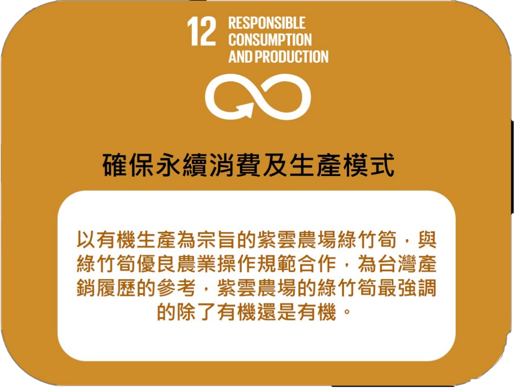

緣起
1953年，吳國池先生誕生在了旗竿湖充滿綠竹林的地方，原本畢業於台北醫學院， 但為了繼承家業從而棄醫從農至今已有數十年，並且更改以往作法，跟隨現代節奏， 以科學方法來種植並且尋求更好的改良品種。
土質介紹
五股地區地表下包夾雜觀音山沉積的火山灰，礦物質十分豐富，並且雨量適中， 種植出的竹筍都具備著纖維較細的特性，經過一代代人的努力到如今成為廣大 民眾都知道的綠竹筍。為何竹筍好吃不苦
吳國池先生認為太陽出來後竹筍就會變苦是錯誤的概念，竹筍是在接觸到陽光後 行光合作用才會變綠以致變苦，並且如果竹筍用有機肥的種植在地下，吃起來較甜， 口感、味道取決於肥料的用法。從竹筍接觸全世界
因綠竹筍的口碑逐漸變得越來越好，甚至世界都有國家開始都有聽過一些吳國池先生的事件， 吳國池先生的家庭成為國際農村青年交換的接待家庭， 也曾經帶領五股的更寮國小小朋友完成「最佳筍友隊 」網站內容建構，帶領一群大朋友進行竹林「農業漂鳥營體驗 」。重要人物
在2009年，這片寧靜的竹林來了一位貴客，他便是三度踏上台灣的日本米其林三星主廚神田裕行， 為了找尋他心中的夢幻食材，他來到這片美麗的竹林中，在主廚神田裕行接觸到竹筍後便讚嘆道， 品種纖維柔細，剛採割下來汁液欲滴，有水果香， No.1的食材也。產品
竹筍乾
紫雲農場綠竹筍乾，採吳國池種植之有機認證綠竹筍，切片抹鹽天然日曬好幾天完成，16斤綠竹筍才製成1斤筍乾，適合控肉或任何滷製方式，風味極佳。
特A級綠竹筍 5台斤/ 盒
(每年6、8兩月為期1週可採收之頂級綠竹筍) (嚴選身形自然生長的選美級好筍、肥美、多汁鮮甜、香氣濃郁) (適合送禮、宴客之頂級涼拌沙拉筍，亦可進行炒、滷、湯品各種料理方式。)
標題
內容
榮耀事蹟
吳國池先生在最近幾十年來陸陸續續獲得大大小小的獎狀,由此可知吳國池先生所培養的綠竹筍乃是竹筍中的竹筍精品
清炒鮮筍 |
綠竹筍燉雞湯
|
涼拌筍沙拉
|
|
材料：香菇、橄欖油、綠竹筍２支、大蒜、肉絲 1.將香菇泡水20分鐘後變軟，綠竹筍去殼切絲、大蒜切碎 2.熱鍋後放入橄欖油，大算放入爆香 3.放入香菇，直到有香氣出現，再放入肉絲、竹筍 4.加一杯水(約100C.C.) 5.蓋鍋蓋，悶煮約20分鐘 6.掀開鍋蓋炒一下，放入調味料(鹽即可、竹筍清甜不需加味素)即完成
|
材料：綠竹筍3支、1/4隻雞切塊、泡水香菇5朵 １. 先將筍子洗乾淨後去殼 ２. 以滾刀法將筍子切成適口大小的塊狀，每朵香菇對切成4等份 ３. 用大火煮滾600C.C.水後，放入竹筍、雞肉與香菇，蓋鍋蓋，轉小火燉煮40分鐘即完成 |
材料：綠竹筍 1.先將筍子洗乾淨後，放入水中(水量淹過竹筍)，蓋鍋蓋，水滾後轉小火煮40分鐘後關火， 整郭靜置放涼後，將竹筍撈起放入塑膠袋，冰入冰箱 2.依個人口味加入少許芥末醬至原味優格內，拌勻後就完成自製沙拉醬 3.食用時將竹筍去殼，再淋入自製沙拉醬，即完成 |
有機農藥
有機農藥是由自然界中的產物來製作出的農藥，其中並不含有任何有害大自然的成分存在，人們利用了 一物剋一物的道理以此來研發出能夠驅除病蟲的有機農藥出來，有機農藥不僅可以不傷害大地，並且 也不會傷害人們的身體，可以讓人們吃得更安心。一般農藥
一般農藥是由各種化學物質所研發出的農藥，雖然可以滅除病蟲存在，但也因此而令大地受到不可磨滅的傷害， 雖然這種農藥種出的蔬菜可以更加飽滿好看，但人們吃進身體後也增加其身體危害因素，從而導致病症層出不窮 而導致不得壽終正寢。

遊戲介紹1
上、下、左、右控制人物走向，按擊左建人物會射出醫箱， 當醫箱打到竹筍害蟲時，害蟲會減1的生命值，當害蟲生命值=0時， 怪物便會消失，小心，竹筍只有10滴血量，人物3滴血量， 盡自己最大的努力保護竹筍不要受到害蟲的侵蝕吧!遊戲畫面